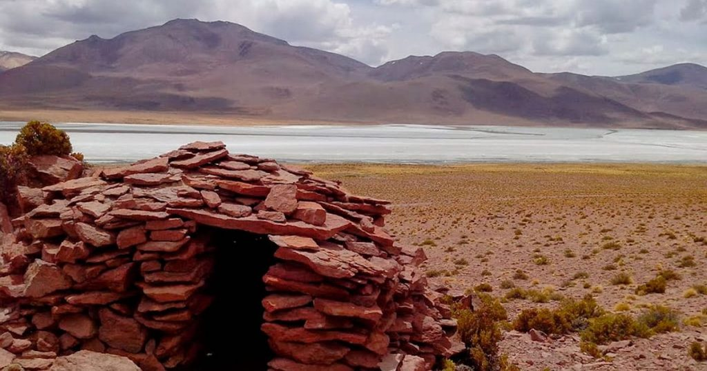

La laguna de Vilama es un cuerpo de agua endorreico que se sitúa en la región altiplánica del noroeste de la Argentina, en un área limítrofe con el sudoeste de Bolivia.
Según la clasificación de Ángel Lulio Cabrera, fitogeográficamente las áridas estepas de su cuenca pertenecen al distrito fitogeográfico de la puna seca de la provincia fitogeográfica puneña, aunque en los sectores de mayor altitud se incluyen en el distrito fitogeográfico altoandino quechua de la provincia fitogeográfica altoandina.9 La vegetación dominante son los pastizales abiertos de distintas especies del género Festuca, con arbustales muy abiertos integrados por varias especies del género Parastrephia. En las márgenes de su tributarios se desarrollan vegas compuestas por cojines de hierbas perennes (Werneria pygmaea, Oxychloe andina, etc.). La fauna de las estepas incluye a la vicuña austral (Vicugna vicugna vicugna) y al suri cordillerano (Rhea pennata garleppi). Ya en la propia laguna abundan las aves acuáticas altiplánicas,10 como la avoceta andina (Recurvirostra andina), la gaviota andina (Chroicocephalus serranus), el cauquén guayata (Chloephaga melanoptera), las parinas o flamencos altiplánicos: el grande o andino (Phoenicopterus andinus), y el chico o de James (Phoenicopterus jamesi),11 la gallareta cornuda (Fulica cornuta),1213 el chorlito puneño (Charadrius alticola), el pato puna (Anas puna), etc. Es una de las áreas importantes para la conservación de las aves en Argentina.14
Se encuentra incluida dentro de la reserva provincial altoandina de La Chinchilla, creada según el decreto N° 2213-E-92. Desde el año 2000, su cuenca también forma parte de la reserva Ramsar Lagunas de Vilama, con una superficie de 157 000 ha, ya que esta laguna representa un ejemplo muy bien conservado de algunos tipos de humedales salobres puneños. Los arroyos que desembocan en ella cuentan con poblaciones de peces y anfibios de distribución limitada.15 Dada su importancia ornitológica, desde el año 2008, su cuenca también fue declarada una de las Áreas importantes para la conservación de las aves (AICA), bajo el nombre de Sistema de lagunas de Vilama-Pululos, con una superficie de 150 000 ha.16